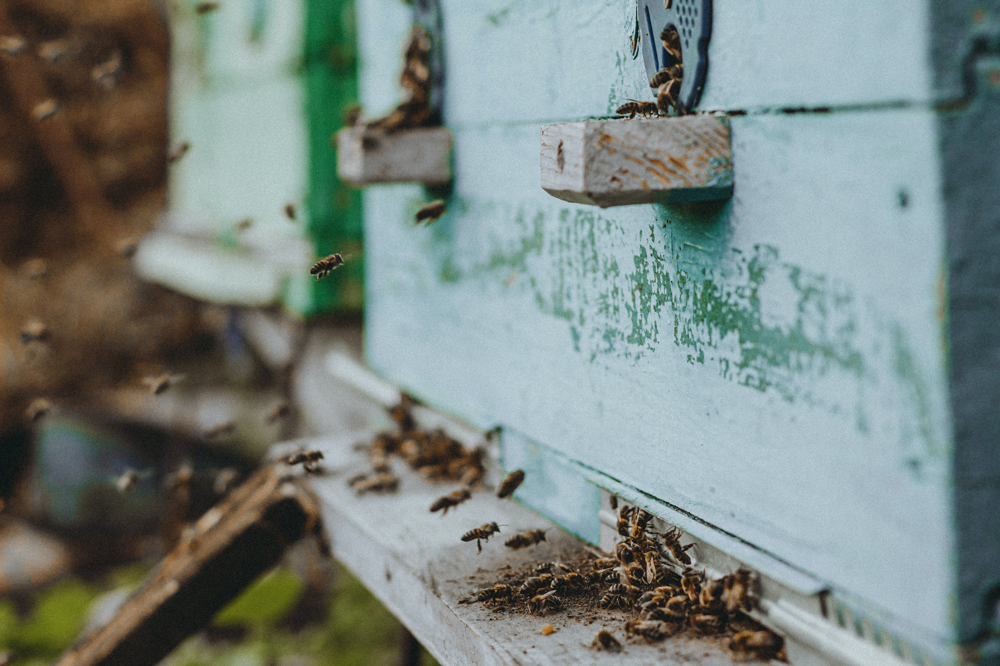

Why Be a Beekeeper?
Becoming a beekeeper can be a rewarding and fascinating endeavor. Here are some compelling reasons to consider taking up beekeeping:
1. Connection with Nature
Beekeeping encourages a close connection with the natural world. It requires attentiveness to the needs of your bees, an understanding of seasonal changes, and an appreciation for the delicate balance of ecosystems. It can be a meditative and grounding experience.
2. Honey Production
One of the most obvious benefits of beekeeping is the production of honey. Harvesting your own honey is not only a delicious reward for your efforts but can also be a source of potential income or a unique gift for friends and family.

3. Positive Environmental Impact
Bees play a crucial role in pollination, contributing to the growth of fruits, vegetables, and flowers. By becoming a beekeeper, you actively participate in supporting local ecosystems and agriculture. Healthy bee populations are essential for biodiversity and food production.

4. Relaxation and Stress Relief
Many beekeepers find the process of working with bees to be therapeutic. The rhythmic hum of the hive, the focused attention required, and the overall pace of beekeeping can be a great way to unwind and reduce stress.

But...
Remember that beekeeping does require time, effort, and a commitment to learning. It's important to educate yourself about bee behavior, hive management, and potential challenges; however, for those who are passionate about nature, sustainability, and learning, beekeeping can be an incredibly fulfilling and enjoyable pursuit.